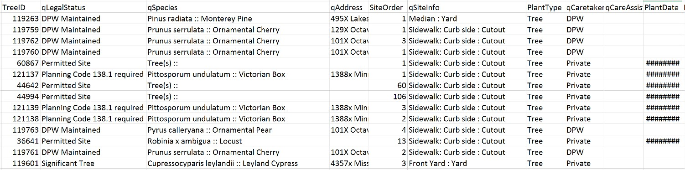

Mapping San Francisco tree geography
This is a project I worked on in my spare time which was motivated by my interest in working with geographical data and my desire to finally get more comfortable with Python. In my research I spent a lot of time working with Matlab, R and C++ to run hardware and analyze biological or clinical data. Since I have been seeing more and more cool projects built with Python, I decided to try it out for myself and get some experience working with a different kind of data as well.
Luckily, the city of San Francisco has an incredible assortment of publicly available data which anyone can download and start playing with. Since I’m a big fan of nature and green space in cities, I settled on a list of all street trees in San Francisco from the Department of Public Works. A summary of my findings is shown below, and you can see the full iPython notebook here.
Data cleaning
The data is available as a csv file which contains 94,552 rows of data for each tree including the tree ID, legal status, species, address, planting date, and geographic coordinates. An example screenshot of the file is shown below, which shows that there is a lot of missing or incomplete data.

After some considerable cleaning and removing of null or incomplete values, I was left with a table like the one below:
| qCaretaker | Latitude | Longitude | plantYear | speciesLatin | speciesCommon |
|---|---|---|---|---|---|
| Private | 37.758938 | -122.488532 | 1994 | Prunus serrulata | Ornamental Cherry |
| Private | 37.789163 | -122.454008 | 2001 | Magnolia grandiflora | Southern Magnolia |
| DPW | 37.713734 | -122.443667 | 2012 | Tristaniopsis laurina | Swamp Myrtle |
| Private | 37.752553 | -122.393692 | 1998 | Sapium sebiferum | Chinese Tallow |
| DPW | 37.796565 | -122.401791 | 2014 | Ginkgo biloba ‘Princeton Sentry’ | Princeton Sentry Maidenhair |
Initial visualization
As a first pass, we can visualize the tree location data as a heatmap superimposed on a map of San Francisco. I used the gmaps package in Python to allow for plotting data on top of Google maps (see the linked iPython notebook for interactive version):

Looking at this map, it is clear that there is quite a bit of variation in tree density across the city. I wondered if this was simply due to variations in local population density, or if there were other factors that influenced where the city chose to plant trees. There were also over 300 different types of trees included in the database; I wondered what types were the most common, and if this also varied with location or other factors.
Grouping by zip code
Since San Francisco is split into nearly 30 zip codes, I thought this would be a great way to cluster the location data for a more in-depth analysis (see image below).

The dividing lines between zip codes also roughly correlate with some of the boundaries between neighborhoods in San Francisco, which increases the likelihood that patterns of tree type and number differ between zip codes (since they almost certainly differ between neighborhoods).
Using the uszipcode package in Python, I mapped each (Longitude, Latitude) coordinate pair to its zip code, and was also able to add on information specific to that zip code such as population density, land area, and average income. The table below shows the full set of information I obtained for each tree (a subset of the columns and 5 rows are shown):
| Latitude | Longitude | … | zipCode | Density | LandArea | Wealthy |
|---|---|---|---|---|---|---|
| 37.758938 | -122.488532 | … | 94122 | 23738.559322 | 2.36 | 26177.898131 |
| 37.789163 | -122.454008 | … | 94118 | 19650.769231 | 1.95 | 41202.501083 |
| 37.713734 | -122.443667 | … | 94112 | 23633.035714 | 3.36 | 18441.943280 |
| 37.752553 | -122.393692 | … | 94107 | 14859.776536 | 1.79 | 49267.061356 |
| 37.796565 | -122.401791 | … | 94111 | 10920.588235 | 0.34 | 70755.44142 |
Now we can start to look at differences between the zip codes!
TBD…
- Zip codes with the most trees per land area (simple bar graph)
- Most common trees (bar graph / histogram)
- Top trees for each zip code (heatmap)
- Most similar zip codes (correlation clustering)
- Map locations of most similar zip codes (map)
Predicting tree number
- Pull weather info?
- Pick a tree type (or just total trees) and make regression model to predict how many are present based on zip code / other characteristics
Tree distribution over time
To include: 1. Trees planted over time 2. Separate by zip code